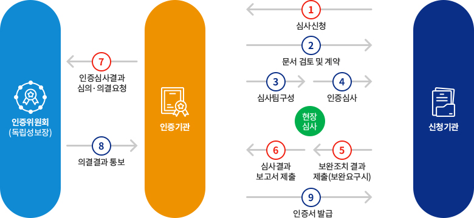

인증제 추진 목적
-
국민관점
표준화된 전자의무기록 기반으로
의료진과의 의사소통 향상
환자 진료기록의 변경이력 관리 등이
강화되어 진료기록에 대한 신뢰성
향상
의료정보의 정보보안 수준을 높여
개인정보 유출 및 보안사고 방지
-
의료기관 관점
안전하고 체계적인 정보관리를 통한
환자 진료의 연속성 확보
투약 경고 등 임상의사결정지원 강화,
의료정보의 이력 관리 등으로
안전하고 질 높은 의료서비스 가능
-
산업계
각 의료기관의 다양한 요구사항에
대한 중복 개발 및 인력 투입 방지를
통한 비용절감과 품질 향상
전자의무기록시스템의 품질 기준에
국가가 인정함에 따라, 시장의 품질
요구 대응
전자의무기록시스템 기능에 대한 국가적 표준과 적합성 검증을 통해 진료정보 상호운용성 확보 및 품질 향상
전자의무기록시스템 인증제 인증 대상
-
신청주체 : 개발업체
의료정보업체가 제조/공급하는 전자의무기록시스템
- 신청주체
- 의료정보업체
신청
- 인증대상
- 의료정보업체
신청
상용 전자의무기록시스템을 개발하는 의료정보업체가
신청하는 것으로 신청하는 제품의 버전에 대해 인증
-
신청주체 : 의료기관
의료기관이 개발/운영하는 전자의무기록시스템
- 신청주체
- 의료기관
신청
- 인증대상
- 전자의무기록
시스템
전자의무기록시스템을 자체 개발하여 운영하는 의료기관
(시스템 인증 & 사용 인증) 또는 제품인증을 받은 상용 제품을
사용하는 의료기관이 신청(사용 인증)
| 의료기관/벤더 |
시스템명 |
인증신청 |
비고 |
| 사용 |
제품(개발) |
| OO의료정보업체 |
OO전자의무기록시스템 |
○ |
|
수정/변경된 내용이 많은 시스템 |
| OO의료정보업체 |
OO전자의무기록시스템 |
○ |
|
수정/변경된 내용이 많은 시스템 |
| OO의료정보업체 |
OO전자의무기록시스템 |
○ |
|
수정/변경된 내용이 많은 시스템 |
| OO의료정보업체 |
OO전자의무기록시스템 |
|
○ |
수정/변경된 내용이 많은 시스템 |
| OO의료정보업체 |
OO전자의무기록시스템 |
|
○ |
수정/변경된 내용이 많은 시스템 |
전자의무기록시스템 인증제 인증 절차
